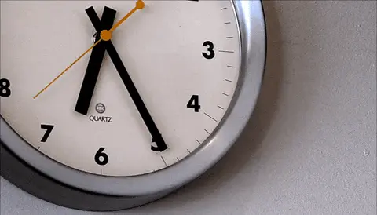

The 6 Elements of a Well-engineered Life üߨ
July 17, 2022
You may have heard the saying “time is money” a few dozen times before.
Well, we can also argue that “money is time” - when you have more money, you can afford to hire people to do the stuff you don’t want to do yourself, which frees you up to do whatever you want. Yet, in society, we cannot exchange value through the means of “time” alone. It would look like a dystopian reality if we worked for seconds and minutes as a currency, don’t you think?
It makes more sense to quantify the currency numerically, through something objective - like money. But it begs the question, with both time and money, what are we actually conceptualising here?
I believe that what we substitute with “money” or “time” is what we call value. We create value, we receive value, and luckily, there are ways in which we can also accumulate value.
In this article, I will explain my mental model of what makes a wealthy and fulfilling life - that is, a life with a lot of accumulated value.
To better understand this framework, we need to dive deeper in the meaning of value in our society.
Value, by definition, is “the importance, worth, or usefulness of something”. We can also use the word “effort” in this context. As I mentioned already, we can:
- Generate value - by creating things, building, working, investing, spending time, essentially giving out a bit of ourselves to achieve something external.
- Receive value - by buying things, using services, taking up space, renting, essentially any act of exchanging some sort of accumulated value for somebody else’s form of value.
- Accumulate value - by keeping material possessions, saving money, owning real estate, essentially being in possession of some form of value that can be exchanged to receive value in return.
As you can now see, money is just one form of value you can own.
In my ponderings, and after reading some essays on the topic, I have reached the following conclusion - there are 6 important elements in life that can be used to store value. I will go over each one, but here is a list in the beginning for all of you who need a TL;DR tag.
- Money
- Data/Information
- Time
- Status
- Energy
- Soul
I must admit, the “Soul” element probably has a better name for what it stands for, but I’m using it as a placeholder till I figure it out.
Let’s start with the most obvious medium of value, money.
Money
Money itself comes in different forms, and has been used as a store of value for as long as society has been a thing. Whether it is gold coins, paper notes, cryptocurrencies, real estate, there has always existed some way for people to exchange value, items, and services between each other.
It is also, ironically indeed, the easiest from the 6 forms of value to accumulate. The processes in our society are geared in such a way to allow for the accumulation of wealth - we have created jobs, business, the economy, investments. Yes, it isn’t an easy game to play, but it is fairly structured. And with enough time and luck, it could be considered one of the more direct ways in which one can accumulate value.
Money can also very easily be converted into all the other types of value. As mentioned before, you can buy your time back with a given amount of money through services. You can acquire a large set of information and even get more energetic (fit and healthy) with the help of money.
In a way, society has helped us by commodifying other forms of value and making them exchangeable against money.
Data
If you’re a frequent reader of my writing, there is a big chance you’re into productivity, self-development, maybe even knowledge-management tools like Notion.
I feel like I, and maybe some of you, belong to this subset of people with a strong inclination to store knowledge as a sort of safety net. In my Notion workspace, I have a whole personal library of resources on all topics I’ve encountered - medicine, programming, marketing, psychology, business, technology, etc.
The data aspect of value is where I believe people can figure out how to create a well-engineered life. When you start out the “game of life” you are given some guidelines - go to school, do well in academics, work a job, profit”, but then once you grow up you realise that the society we live in offers much less instructions and so many more opportunities than expected. And you come to this realisation through the increase in knowledge, or data points, as you grow up. The best skill you can invest in, in my eyes, is to learn how to figure out stuff. Google is your friends, YouTube is like free university, and there is so much to be learned from the people all around us, that the sheer amount of “free value” simply hanging around is obscene.
This is why I believe that Data, while maybe not as straightforward to acquire as Money, is the most abundant resource in our age - after all, there is a reason we call it the Information Age.
Time
Now, Time as a store of value is interesting. Mainly because it is very difficult to accumulate.
Nobody guarantees you will have more time, both literally and metaphorically. Even if we get promised to 100% live to a certain age, nobody can guarantee that the time spent till you die will be the most pleasant.
In a sense, time is a store of value in the sense that it can always be exchanged to acquire the greatest joys in life - you cannot enjoy life without having the time to do so. So in a way, we are accumulating the other 5 types of value in order to be able to enjoy more of our time. The additional aspect is that by raising more money to your name, achieving higher status and so on, you increase both the quality of time you will have in the future, and the amount of time you’ll live in a literal sense. So, this is the way we can accumulate value in the form of time - invest in activities and projects that will allow us to live longer and enjoy free time.
Status
Status is a form of value that varies massively in form from person to person. When you are just a student, you may not realise the importance of having a good network of friends and connections.
Then, say, you enter a low stage of your life, and you realise how crucial it is to have a support network. To have people you trust, and have people who trust you. Or say, you’re looking for a job or trying to start a business venture - in all cases, it doesn’t hurt to have a wide and high-quality network of people to rely on for help.
Ways in which you can invest in the Status aspect of value include:
- Spending time with loved ones and friends
- Going out of your comfort zone to meet new people
- Investing your energy into deepening the relationships you already have
Energy
You may have heard people suggest you don’t “waste” your precious 20s chasing cash, or chasing low-quality fun since those are the times at which you are most youthful.
Now, while this isn’t necessarily true (there are many elderly people and adults with higher energy levels than some teenagers), the sentiment hold truth - Energy is a resource that we ought to keep in mind.
In the aspect of energy as a store of value, we can include both your levels of physical health and the mindset you have. Many people choose to spend their time and short-term energy on working out, not because it is the most fun activity, but because of the health benefits. You can think of it as an investment in your Energy in the long term.
The weird thing about energy as a form of value is that in order to increase your energy reserves, you often need to completely empty them in the short term. It’s kinda counter intuitive. Working out, for example, is a way to increase your vitality, but will leave you sore and tired at the end of it. Nevertheless, it’s crucial to invest in your high energy reserves - it won’t be fun to have all the time and money in the world but lack the health as an old person.
Soul
Phew, we reached the last, and I admit, worst-named by me aspect of wealth.
But we cannot risk bypassing it - to engineer a good life for yourself, you must focus on the spiritual aspect of it as much, if not more, than the material and physical aspects. A rich soul can look differently to different people and there is no single recipe for it. There are some aspects to it that I think are pretty universal though - introspection, meditation, empathy and compassion, understanding yourself and others better, finding passions, chasing your dreams.
It may be last in order on this list, but that doesn’t mean it should be left for the very last place in your day-to-day life. Enriching yourself emotionally and spiritually through creative work, consuming meaningful content and interacting with people is something that can be integrated into your routines and will definitely help you in the long term.